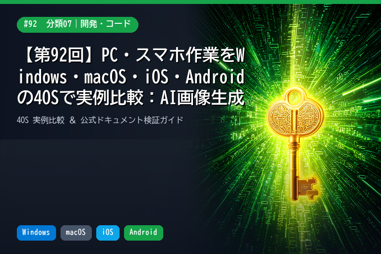

#92｜分類07: プログラミング・ソフトウェア開発 2026-11-28

【第92回】PC・スマホ作業をWindows・macOS・iOS・Androidの4OSで実例比較：AI画像生成器（DALL-E / Midjourney等）に文字を入れるコツと、保存したプロンプトを共有する初心者向けブログの新規記事テーマ｜Windows・macOS・iOS・Android
「AIでかっこいい画像を作ったけれど、肝心の文字が崩れてしまう…」「作ったプロンプト（指示文）をスマホでもPCでもすぐに呼び出したい」といった悩みをお持ちではありませんか？
AI画像生成ツール（DALL-E 3やMidjourneyなど）の進化により、画像内のテキスト描写能力は向上していますが、依然として正確なフォント指定や複雑なレイアウトを完璧に再現するのは難しいのが現状です。また、複数のデバイスを使い分ける現代では、「どこで作成したプロンプトをどうやって同期するか」というワークフローの構築も重要です。
この記事では、Windows、macOS、iOS、Androidの4つの主要OSを横断しながら、「AI画像への文字入れテクニック」と「GitHubを活用したプロンプト管理術」の実例を徹底比較します。この記事を読めば、どのデバイスでもスムーズにクリエイティブな作業を進めるための最適解が見つかります。
4OS比較早見表
| 機能・項目 | Windows 11 | macOS | iOS (iPhone/iPad) | Android |
|---|---|---|---|---|
| 主な画像編集ツール | Paint / Photoshop Express | Pages / Photopea (Web) | 写真アプリ (Markup) | Google フォト / Snapseed |
| プロンプト管理 | VS Code / github.dev | VS Code / github.dev | GitHub Mobile アプリ | GitHub Mobile アプリ |
| テキスト追加の自由度 | 高（レイアウト自由） | 中（Pages等で補完） | 低（簡易的な挿入） | 低（機種依存あり） |
| 同期の利便性 | ◎ (Git連携) | ◎ (Git連携) | ◯ (Mobileアプリ) | ◯ (Mobileアプリ) |
1. Windows 11 での実例手順
Windows環境は、自由度の高い編集と強力な開発ツールとの親和性が最大の特徴です。
画像へのテキスト追加手順
- AIで生成した画像をブラウザで開き、右クリックから「イメージとして保存」を選択。
- 標準アプリの「Microsoft Paint（ペイント）」またはストアアプリの「Photoshop Express」を起動。
-
「描画ツール」タブからテキストボックスを追加し、「Aa」ボタンを押して文字を入力。
-
制限事項: 標準のPaintはフォントの種類が限られるため、高度なデザインには「Photoshop Express」等の外部アプリ導入を推奨します。
- よくあるトラブルと解決法:
- 問題: 背景色と文字が重なって見にくい。
- 解決: 「写真」アプリでコントラストを調整するか、Paintで文字に枠線（アウトライン）を引く。
- 問題: 保存時に画像が圧縮され文字がぼやける。
- 解決: 「名前を付けて保存」から形式を「PNG（非圧縮）」に指定する。
- 問題: 背景色と文字が重なって見にくい。
プロンプト管理
ローカルのVS Codeでプロンプトを記述し、GitHubリポジトリへプッシュすることで、他のデバイスと同期します。
2. macOS での実例手順
macOSは洗練されたUIを持ちますが、標準の「プレビュー」アプリだけでは画像への自由な文字入れには限界があります。
画像へのテキスト追加手順
- AI画像をダウンロードし、「プレビュー」で開く（※ここでは確認用）。
- 「Pages」アプリを起動し、画像をドラッグ＆ドロップ。
-
ツールバーの「T」アイコンをクリックしてテキストを追加。背景透過処理も行えるため、デザイン性が高まります。
-
制限事項: 「プレビュー」単体では画像上の自由な位置へのテキスト挿入機能が弱いため、PagesやWeb版のPhotopeaを併用するのが標準的なワークフローです。
- よくあるトラブルと解決法:
- 問題: Pagesで保存した際にメタデータ（プロンプト情報等）が消える。
- 解決: 修正前に元のファイルをバックアップし、プロンプトは別途テキストファイルとして管理する。
- 問題: Pagesで保存した際にメタデータ（プロンプト情報等）が消える。
3. iOS（iPhone / iPad）での実例手順
モバイル環境では「手軽さ」を重視したワークフローになります。
画像へのテキスト追加手順
- 「写真」アプリでAI画像を開く。
- 「共有ボタン」をタップし、「マークアップして送信」を選択。
-
ツールバーの「T（テキスト）」アイコンをタップし、フォントを選んで入力。
-
制限事項: 複雑なレイアウトや正確な位置調整には限界があります。
- よくあるトラブルと解決法:
- 問題: 「マークアップして送信」ではファイル自体が更新されない場合がある。
- 解決: 共有先を「ファイルを保存（iCloud/Google Drive）」にし、新しい画像として書き出す。
- 問題: 「マークアップして送信」ではファイル自体が更新されない場合がある。
4. Android での実例手順
AndroidはメーカーごとにUIが異なりますが、Googleエコシステムを活用するのが最も安定します。
画像へのテキスト追加手順
- 「Google フォト」アプリでAI画像を開く。
- 「編集」→「マークアップ（またはペンツール）」を選択。
-
テキストアイコンをタップして入力。（※機種によりメニュー名が異なる場合があります）
-
制限事項: 機種依存が大きく、標準機能では複雑な装飾が困難です。
- よくあるトラブルと解決法:
- 問題: 「マークアップ」ボタンが表示されない。
- 解決: Playストアから「Snapseed」などの無料アプリをインストールし、テキストツールを使用する。
- 問題: 「マークアップ」ボタンが表示されない。
プロンプトの管理と共有：4OS で GitHub を活用する実例比較
どのOSでも共通して使える最強のプロンプト同期術がGitHubの活用です。
コンセプト: ローカル編集 → GitHub Web/アプリへプッシュ・プル
- Windows / macOS: VS Codeでプロンプトを管理。
github.dev（ブラウザ版エディタ）を使えば、インストール不要でどこからでも編集可能です。 -
iOS / Android: GitHub Mobileアプリをインストール。外出先でも最新のプロンプトを確認・修正し、即座に生成へ反映できます。
-
共通の注意点: プロンプトファイルはテキストのみを管理してください。画像データ自体をリポジトリに入れると容量制限や読み込み遅延の原因になります。
よくあるトラブルと解決チェックリスト
- [ ] 問題: Git pushが失敗し「Authentication failed」と出る
- 解決: GitHub Desktopアプリを導入するか、ブラウザのGitHubタブでログイン状態を再確認してください。
github.devならブラウザ認証のみで動作します。
- 解決: GitHub Desktopアプリを導入するか、ブラウザのGitHubタブでログイン状態を再確認してください。
- [ ] 問題: AI生成画像の文字が「ハルシネーション（崩れ）」を起こす
- 解決: プロンプト内で「Text: [単語]」と強調するだけでなく、生成後に各OSの標準機能（Paint, Pages, Markup等）で上書きするのが最も確実です。
- [ ] 問題: 保存した画像にテキスト情報が埋め込まれていない（コピペで消える）
- 解決: 「共有」→「ファイルとして送信」を選択し、必ず新しい画像形式（PNG/JPG）として書き出してから他のOSへ渡してください。
まとめ：快適なマルチOS環境を作るポイント
AI画像生成とプロンプト管理を4OSで円滑に行う鍵は、「各デバイスの得意分野を使い分けること」です。
- Windows/macOS: 高精度な編集とVS Codeによる本格的なプロンプト管理。
- iOS/Android: 隙間時間での確認と、標準ツールを使ったクイックな文字入れ。
このワークフローを快適にするために、以下の周辺機器やツールの導入も検討してみてください。
- メカニカルキーボード: 長時間のプロンプト記述における打鍵感の向上。
- ウルトラワイドモニター: 画像生成とエディタの同時表示による作業効率の最大化。
- 技術書・VPS・クラウド: 複雑なAIモデルを動かすための知識習得や、より高度な環境（GPUサーバー等）へのアクセスは、クリエイティブの幅を劇的に広げてくれます。
各OSの特性を理解し、GitHubをハブとした同期体制を築くことで、あなたのクリエイティブ制作はよりスムーズでプロフェッショナルなものになるはずです。
参考文献・公式ドキュメント（一次情報ソース）
本記事の手順・仕様は以下の各OSおよびツールの公式ドキュメントに基づいています。OSアップデートによりメニュー名称や挙動が変わる場合があるため、最新仕様の確認にもご活用ください。
- [Windows / macOS] GitHubからの Web 用 VS Code の使用 (github.dev) - GitHubドキュメント
- [共通] GitHub上でファイルを編集する - GitHubドキュメント
- [iOS / Android] GitHub Mobile 公式ガイド - GitHubドキュメント